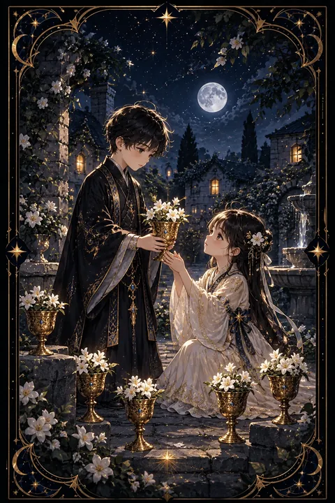

이 게시물은 쿠팡 파트너스 활동의 일환으로, 이에 따른 일정액의 수수료를 제공받습니다.


컵 6 카드 — 순수한 추억과 옛 인연
컵 6 카드 한눈에 보기
컵 6 카드 상징 읽기

동네보살의 카드 그림은 전통 라이더–웨이트 덱의 뜻을 새 그림으로 옮긴 것입니다. 아래 상징 설명은 전통 덱의 그림을 기준으로 합니다.
오래된 마을의 정원에서 키가 조금 더 큰 아이가 흰 꽃이 담긴 잔을 작은 아이에게 건네고 있습니다. 대가를 바라지 않는 순수한 나눔과 어린 시절의 다정함을 보여 주는 장면입니다.
잔에 담긴 흰 꽃은 별 모양의 다섯 꽃잎을 지녀 순수함과 따뜻한 마음을 상징합니다. 주변에 놓인 여섯 개의 잔에도 모두 꽃이 담겨 있어 과거의 좋은 기억이 풍성하게 남아 있음을 나타냅니다.
배경의 돌담과 오래된 집은 고향과 안전한 보금자리를 뜻합니다. 한편 멀어지는 어른의 뒷모습은 이미 지나간 시간, 되돌아갈 수 없는 과거를 가리키는 요소로 읽히기도 합니다. 이 카드는 따뜻한 추억이 주는 위로와 함께 그 추억에 너무 오래 머무르지 말라는 균형을 함께 품고 있습니다. 아이들의 작은 체구와 밝은 옷은 세상을 계산 없이 바라보던 시선을 떠올리게 합니다.
컵 6 카드 정방향 뜻
정방향 컵 6은 순수했던 시절의 기억과 따뜻한 옛정을 뜻합니다. 어린 시절의 추억이 떠오르거나 오래 연락이 끊겼던 친구, 옛 동료, 고향 사람과 다시 이어지는 흐름이 찾아옵니다. 과거에 맺은 좋은 인연이 지금의 삶에 도움을 주는 시기이기도 합니다.
이 카드는 계산 없이 베푸는 마음의 가치를 일깨웁니다. 작은 선물이나 친절이 뜻밖의 기쁨으로 돌아오고 아이처럼 솔직하게 마음을 표현할 때 관계가 편안해집니다. 어린아이를 돌보거나 가르치는 일, 가족과 함께하는 시간에도 좋은 기운이 흐릅니다.
마음이 지쳤다면 어린 시절 좋아했던 음식, 음악, 장소를 다시 찾아가 보세요. 순수했던 감각을 되살리는 일이 지친 마음을 부드럽게 풀어 줍니다. 오랜만에 떠오르는 사람이 있다면 짧은 안부를 전해 보는 것도 좋습니다. 과거가 건네는 꽃 한 송이가 오늘을 따뜻하게 만들어 줍니다.
컵 6 카드 역방향 뜻
역방향 컵 6은 과거에 지나치게 머물러 현재를 놓치는 상태를 뜻합니다. 좋았던 시절만 떠올리며 지금의 생활을 불만스럽게 여기거나 옛 연인과 지금의 사람을 자꾸 비교하게 되는 흐름입니다. 기억 속의 과거는 실제보다 아름답게 꾸며지기 쉽다는 점을 기억해야 합니다.
예전 방식만 고집하거나 어른으로서 책임을 피하고 싶은 마음이 드러나기도 합니다. 변화가 두려워 익숙한 곳에만 머물다 보면 새로운 기회를 받아들일 여유가 줄어듭니다.
한편 이 카드는 과거와 작별하고 성숙해지는 전환점으로 읽히기도 합니다. 오래 붙잡고 있던 추억이나 관계를 정리하고 지금의 삶에 집중할 준비가 되었다는 신호일 수 있습니다. 소중한 기억은 마음에 간직하되 오늘 해야 할 일과 만나야 할 사람에게 시선을 돌려 보세요. 과거는 돌아갈 곳이 아니라 앞으로 걸어갈 힘을 주는 뿌리입니다.
연애에서 컵 6 카드
솔로라면 편안하고 순수한 인연이 곁에 머무는 때입니다. 어릴 적 친구나 오래 알던 지인이 새롭게 보이거나 첫사랑을 떠올리게 하는 설렘을 만날 수 있습니다. 화려한 만남보다 편하게 웃을 수 있는 상대에게 마음이 끌립니다.
연인이 있다면 첫 만남 무렵의 순수한 마음을 되찾기 좋은 때입니다. 처음 데이트했던 장소를 다시 찾거나 추억이 담긴 사진을 함께 보며 이야기를 나눠 보세요. 직접 쓴 쪽지 같은 소박한 표현이 마음을 크게 움직입니다.
역방향이라면 지난 연애를 향한 미련이 현재의 관계를 가로막고 있지 않은지 돌아봐야 합니다. 옛사랑을 기준으로 지금의 상대를 재기보다 지금 모습 그대로 바라보는 연습이 필요합니다. 추억은 관계를 이어 주는 다리이지 비교의 잣대가 아니라는 점을 기억해 두세요.
재회·속마음 질문에서 컵 6 카드
재회를 묻는 자리에서 컵 6이 나오면 옛 인연이 다시 이어질 가능성이 높은 편입니다. 상대 역시 함께했던 좋은 시절을 따뜻하게 기억하고 있으며 추억을 매개로 자연스럽게 연락이 닿을 수 있습니다. 다만 과거의 좋은 기억만으로 관계를 되살리면 헤어졌던 이유가 다시 드러날 수 있습니다. 그리운 마음과 함께 지금의 서로가 어떻게 달라졌는지 확인하는 대화가 필요합니다. 역방향이라면 추억을 미화하고 있을 가능성이 있으니 냉정하게 돌아보세요. 옛 추억을 가볍게 꺼내는 인사가 좋은 계기가 될 수 있지만 대화는 지금의 이야기로 이어 가는 편이 좋습니다. 과거와 현재가 함께 이어질 때 관계가 새로 설 수 있습니다.
일·금전에서 컵 6 카드
일에서는 과거의 경험과 인맥이 도움이 되는 카드입니다. 예전 직장 동료나 거래처에서 반가운 제안이 오거나 오래전에 배운 기술이 다시 쓰일 기회가 생깁니다. 교육, 아동, 복지, 추억을 다루는 콘텐츠처럼 따뜻한 감성이 쓰이는 분야와 궁합이 좋습니다.
재물 쪽으로는 가족이나 옛 지인의 도움이 들어올 수 있습니다. 역방향이라면 예전의 성공 방식에만 기대지 말고 달라진 환경에 맞춰 일하는 방식을 새롭게 점검해 보세요. 오래전 함께 일했던 사람에게 근황을 전하는 연락이 새 일의 문을 열어 주기도 합니다. 예전에 익힌 솜씨를 지금의 방식에 맞게 다듬어 보세요. 예전 거래처나 옛 동료에게 안부를 건네면 뜻밖의 일감이 이어지기도 합니다.
컵 6 카드는 예일까 아니오일까
꽃 담긴 잔을 선뜻 건네는 카드여서 선의와 옛 인연이 도움이 되어 바라는 일이 순하게 풀린다고 읽어 예로 답합니다. 거꾸로 나오면 과거에 매여 있는 상태라 지금에 맞게 생각을 바꿔야 답이 열립니다.
자주 묻는 질문
컵 6 카드 역방향은 나쁜 뜻인가요?
역방향 컵 6은 과거에 지나치게 머물러 현재를 놓치는 상태를 뜻합니다. 좋았던 시절만 떠올리며 지금의 생활을 불만스럽게 여기거나 옛 연인과 지금의 사람을 자꾸 비교하게 되는 흐름입니다. 기억 속의 과거는 실제보다 아름답게 꾸며지기 쉽다는 점을 기억해야 합니다.
컵 6 카드가 연애 질문에 나오면요?
솔로라면 편안하고 순수한 인연이 곁에 머무는 때입니다. 어릴 적 친구나 오래 알던 지인이 새롭게 보이거나 첫사랑을 떠올리게 하는 설렘을 만날 수 있습니다. 화려한 만남보다 편하게 웃을 수 있는 상대에게 마음이 끌립니다.
타로 카드는 어떻게 뽑나요?
타로 카드 페이지에서 78장을 섞으면 그중 22장이 펼쳐집니다. 마음이 가는 세 장을 고르면 과거·현재·미래 자리에 놓이고, 한 장씩 뒤집어 자리와 방향에 맞는 풀이를 읽습니다. 정방향과 역방향은 섞는 순간 정해집니다.